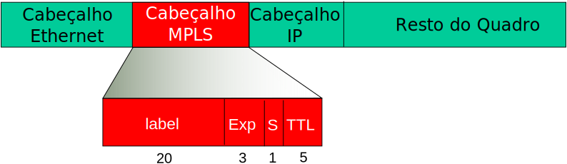
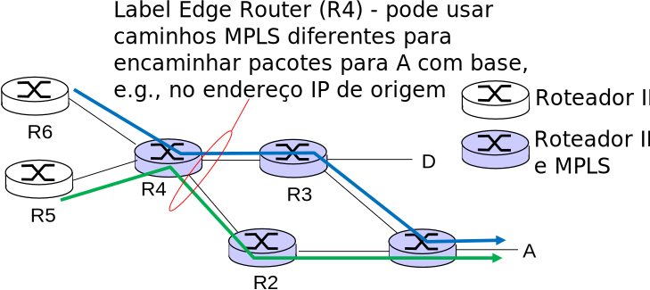
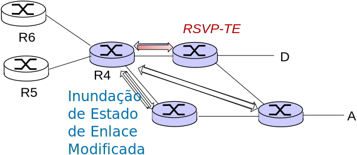
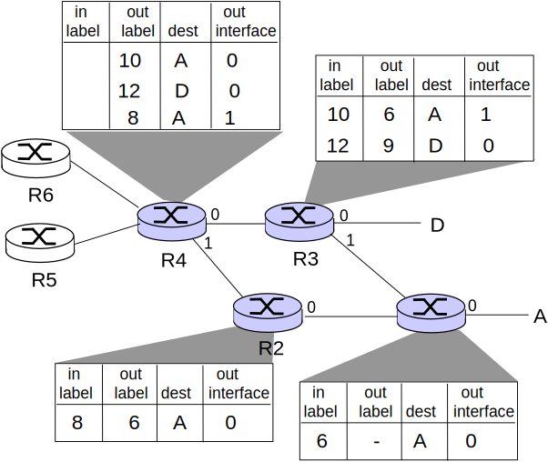
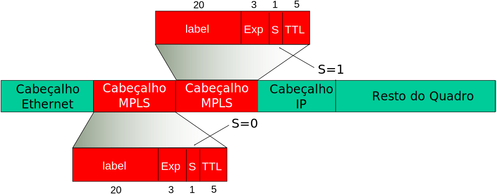

Aula 7 - Camada de Enlace: MPLS
Diego Passos
Universidade Federal Fluminense
Redes de Computadores II
Na Última Aula...
VLANs:
Solução para
“separar” redes em nível 2
, compartilhando mesma infraestrutura física.
Separação
puramente lógica
.
Define
domínios de broadcast
distintos.
Motivações:
segurança, desempenho
.
Podem ser definidas com base em:
Portas específicas.
Tags informadas em cabeçalhos específicos.
VLANs podem se estender por
vários switches físicos diferentes
.
STP:
Protocolo
da camada de enlace.
Constrói
topologia lógica em árvore
.
Evita problemas causados por
loops
.
Permite estabelecimento (físico) de
enlaces redundantes
.
Algoritmo distribuído:
Similar a roteamento em vetor de distância.
Switches
anunciam periodicamente
raiz, melhor distância conhecida.
Conhecimento atualizado
, se informações mais corretas/caminhos melhores são recebidos.
MPLS
Duas Funções Chave da Camada de Rede [Revisão]
Encaminhamento:
mover pacotes da entrada para a saída de um roteador.
Roteamento:
determina rota usada por pacote da origem ao destino.
Algoritmos de roteamento
.
Analogia:
Roteamento:
processo de planejar uma viagem da origem ao destino.
Encaminhamento:
processo de realizar um trecho da viagem.
Sinergia entre Roteamento e Encaminhamento [Revisão]
Redes de Datagramas: Tabela de Roteamento (I) [Revisão]
Redes de Datagramas: Tabela de Roteamento (II) [Revisão]
Pergunta:
e se os endereços não são divididos de forma tão organizada?
Casamento por Prefixo mais Longo [Revisão]
Casamento por Prefixo mais longo
Ao procurar por uma entrada na tabela de roteamento para um destino, opte sempre pelo
prefixo mais longo
que casa com o endereço do destino.
Exemplos:
Destino:
11001000 00010111 0001
0110 10100001
.
Qual interface?
Destino:
11001000 00010111 0001
1000 10101010
.
Qual interface?
Busca em Tabela de Roteamento
Pode ser implementada de várias formas.
Por
software
:
Busca linear:
\(O\left(n\right)\)
.
Busca binária (assumindo ordenação das entradas):
\(O\left(log_2 n\right)\)
Esta complexidade é “boa”?
Lembre-se que:
Volume de pacotes encaminhados pode ser muito grande: pode chegar a vários
milhões por segundo
.
As tabelas de roteamento da Internet hoje não são tão compactas assim.
Multiprotocol Label Switching (MPLS)
Objetio inicial: encaminhamento IP rápido utilizando
label
de tamanho fixo (ao invés de endereço IP).
Busca rápida em tabela de roteamento utilizando identificador como índice (ao invés de casamento de prefixo mais longo).
Empresta ideias das Redes de Circuitos Virtuais (VC).
Mas datagrama IP ainda mantém seus endereços IP de origem/destino.

Roteadores MPLS
Também conhecidos como
label-switching router
.
Encaminham pacotes para interfaces de saída com base apenas no valor do
label
(não inspecionam endereço IP).
Tabela de roteamento MPLS é distinta da tabela de roteamento IP.
Flexibilidade:
decisões de encaminhamento do MPLS podem ser diferentes das do IP.
Utilizar endereços de destino
e de origem
para rotear fluxos para o mesmo destino de forma diferente (
engenharia de tráfego
).
Re-rotear fluxos rapidamente se enlace falha: caminhos de
backup
pré-computados (útil para VoIP).
Caminhos MPLS
vs.
Caminhos IP (I)
Roteamento IP:
caminho para o destinatário é determinado apenas pelo endereço IP de destino.
Caminhos MPLS
vs.
Caminhos IP (II)

Roteamento IP:
caminho para o destinatário é determinado apenas pelo endereço IP de destino.
Roteamento MPLS:
caminho para o destino pode ser baseado em ambos os endereços de origem e destino.
Reestabelecimento rápido de rotas: rotas de
backup
pré-computadas em caso de falhas de enlaces.
Sinalização MPLS
Modificar protocolos de estado de enlace como o OSPF e o IS-IS para carregar informação utilizada pelo roteamento MPLS.
e.g.
, largura de banda dos enlaces, quantidade de banda “reservada”.
Roteadores MPLS de borda (LERs) usam o protocolo de sinalização RSVP-TE para configurar o encaminhamento MPLS dos demais roteadores MPLS.

Tabelas de Roteamento MPLS

MPLS: Empilhamento de
Labels
(I)
Roteadores MLPS podem “empilhar”
labels
.
Pacote MPLS (
i.e.
, incluindo cabeçalho MPLS) é encapsulado em outro cabeçalho MPLS.
Label
original é mantido, novo
label
externo
é adicionado.
Operação de
push
.

MPLS: Empilhamento de
Labels
(II)
Encaminhamento realizado apenas com base no
label
mais externo.
Em certo roteador, tabela pode instruir a realização de um
pop
, revelando
label
mais interno.
Permite
roteamento hierárquico
.
MPLS: Classes de Tráfego
O campo Exp, de 3 bits, atualmente é usado como um identificador de Classe de Serviço (CoS).
Permite diferenciar, para um mesmo
label
, pacotes que devem ser tratados de forma distinta.
Diferenciação de tráfego
.
Mais detalhes no Capítulo 7.
MPLS: Camada 2.5
MPLS não é um protocolo de camada 2.
Se preocupa com encaminhamento de pacotes por
múltiplos saltos
.
Também não é exatamente um protocolo de camada 3.
Encapsula o IP.
Sua localização exata na pilha de protocolos é discutível.
e.g.
, Kurose e Ross o apresentam no capítulo da camada de enlace.
e.g.
, Tanenbaum e Wetherall o apresentam no capítulo de camada de rede.
Por isso, alguns autores classificam o MPLS como um protocolo de
camada 2.5
.
MPLS e Outros Protocolos
MPLS foi idealizado para encapsular tráfego IP.
Mas
é genérico o suficiente para trabalhar com outros protocolos da camada de rede.
Também pode ser usado com diversas tecnologias de camada de enlace.
Não necessariamente Ethernet.
MPLS: Usos
Motivação original era acelerar encaminhamento de datagramas IP, simplificando buscas na tabela de roteamento.
Ainda relevante com tecnologias como TCAM?
Hoje, muito empregado por sua flexibilidade.
Dissocia roteamento do encaminhamento.
Permite aplicação de critérios variados, diferenciação de tráfego.
Simplifica implantação de soluções de
Engenharia de Tráfego
.
Simplifica a utilização de múltiplas rotas entre origem e destino.
...
Resumo da Aula...
Protocolo de camada 2.5:
Entre camada de rede e camada de enlace.
Motivação original: agilizar encaminhamento.
Tabela de encaminhamento indexável.
Consultas mais rápidas.
Funcionamento:
Roteadores MPLS de borda adicionam
label
a cada pacote de acordo com destino, outros critérios.
Tabelas de encaminhamento em cada nó associam
labels
a portas de saída.
Protocolos de sinalização configuram
labels
nas tabelas de encaminhamento dos roteadores.
Outros detalhes:
Labels
podem ser empilhados: roteamento hierárquico.
Classes de tráfego podem ser definidas.
Proposto com IP em mente, mas pode ser utilizado com outras combinações de protocolos das camadas 2 e 3.
Leitura e Exercícios Sugeridos
MPLS:
Páginas 361 a 363 do Kurose (Seção 5.8).
Exercícios de fixação 35 e 36 do Capítulo 5 do Kurose.
Próxima Aula...
Iremos finalizar a discussão sobre a camada de enlace.
Algumas conclusões.
Alguns exemplos práticos.
Iremos também fazer um apanhado geral do processo de transmissão de um pacote pela Internet.
Considerando todas as camadas.
Veremos onde a camada de enlace se encaixa.
Pequena revisão da matéria vista em Redes I.